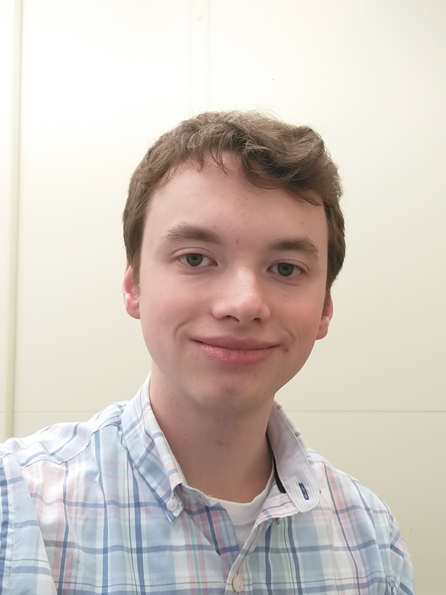

Howdy
(again)
I'm William Stiller, though I prefer to be called Will by friends. I graduated from Penn State University (PSU), the Behrend College in December 2023 with a undergraduate degree in Digital Media, Arts, and Technology with a minor in Data Visualization. During my undergraduate studies, my major projects involved myself in text markup, natural language processing, and data visualization. My studies led me towards the research field of data science where I hope to earn a master's degree before enrolling in a PhD program.
I'm currently enrolled in a master's level program at Boston University! I'm pursuing a Master of Science degree in Data Science, where I'm currently taking Tools for Data Science, AI Ethics, Topics in Data Science Metholologies, and Mathematical Foundations of Data Science. My goal is to complete a master's thesis at the end of 2027 focused on analytic systems on 3-dimensional discrepancy data concerning manufactured products. I'm still exploring opportunities at BU, so this may change in the future.
Interests of mine include working with heterogeneous data from systems (originating from various formats and/or sources), retrieving information and data from collections, and obtaining key analyses of data through processing (such as NLP). A lot of this is largely due to my Digital Media, Arts, and Technology (DIGIT) undergraduate degree at PSU, and in part due to my prior SURF fellowship at the National Institute of Standards and Technology. Website development will also forever remain a favorite activity of mine.
If you wish to connect, feel free to reach out to me: wstiller AT bu DOT edu.
